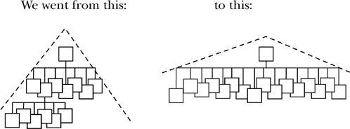

The Price of “Putting Our House in Order”
During the last ten years we have downsized, “right-sized,” laid off, and fired people’s butts. We have cut payrolls, closed plants, sold off divisions, and generally scared all our remaining employees to death. We nodded in approval as characters like Chainsaw Al (at one time the worst CEO in America) did their dirty work. We bid up the stocks of companies like AT&T who led the trend, i.e., led the retreat.
The principal target of the cuts has been that bugaboo of organizational efficiency: middle management. We asked ourselves, “What are they, after all, those middle managers? What are they but fat? What do they really exist for other than to be cut out in the interest of efficiency? ” And so we cut. We surgically removed the middle layers of our organizations, flattening the charts and widening the scope of management at each level.

Was that a good thing to do? I have my doubts.
Maybe middle management exists for some reason above and beyond filling the space between the top and the bottom of the hierarchy. Part of my purpose in this book is to examine what’s supposed to happen in the middle of a healthy organization, the critical role of middle management.
The main activity of those managers is reinvention. It is the middle of the organization where reinvention takes place. This is where the dynamic of today’s organizational functioning is examined, taken apart, analyzed, resynthesized, and assembled back into new organizational models that allow us to move forward.
What got cut out of the most aggressively purged organizations is the capacity to change. The so-called restructurings have, in most cases, optimized the present steady state, only at the expense of the future.